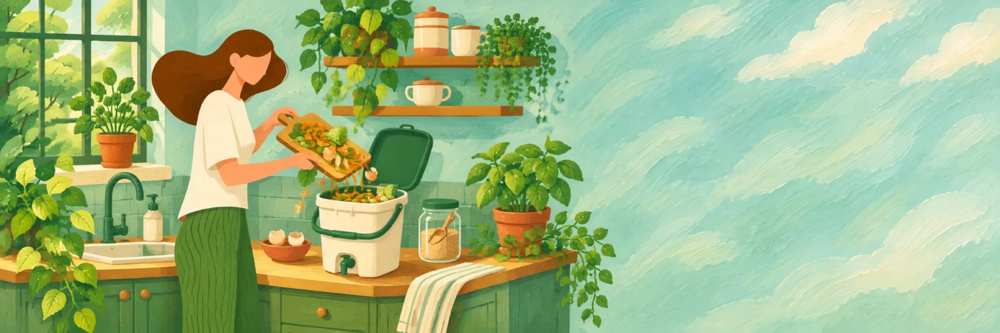

Компост
в квартире
Очистки от картошки, кофейная гуща, яблочные огрызки — каждый день мы выбрасываем то, что могло бы стать плодородной землёй. На свалке эти остатки гниют без воздуха и выделяют метан, мощный парниковый газ. А в квартире их можно превратить в удобрение для цветов, рассады и саженцев — без запаха, мух и дачи. Разбираем три способа: червяков, бокаши и общий компост, — что можно класть, а что нельзя, и как исправить, если что-то пошло не так.
Зачем компостировать в городе
По оценке ООН, в 2022 году люди выбросили больше миллиарда тонн еды, и около шестидесяти процентов этого количества пришлось на домохозяйства. В среднем на человека — порядка восьмидесяти килограммов в год только дома. В российском мусорном ведре пищевые и другие органические отходы составляют, по разным оценкам, около трети всего содержимого.
На полигоне эти остатки оказываются под слоями другого мусора без доступа воздуха. Там их разлагают бактерии, которые выделяют метан — газ, который на столетнем горизонте нагревает планету примерно в тридцать раз сильнее углекислого, а на двадцатилетнем — более чем в восемьдесят. Отходы в целом дают около пятой части всего метана, который выбрасывает человечество. Плюс фильтрат, запах, пожары на свалках.
В эссе «Стрелка назад» мы писали, что возврат вещества — самая недостроенная часть любого круговорота. Городская квартира — место, где эта стрелка обрывается чаще всего: у нас нет ни грядки, ни компостной кучи. Хорошая новость в том, что домашние методы работают и в однокомнатной квартире.
Три способа — какой выбрать
| Вермикомпостер | Бокаши | Морозилка + общий компост | |
|---|---|---|---|
| Как работает | черви и микробы перерабатывают остатки в биогумус | остатки сквашиваются без воздуха с помощью молочнокислых бактерий | остатки копятся в морозилке и раз в неделю уносятся в общий или дачный компост |
| Что получится | готовый биогумус через 3–6 месяцев | «заготовка» через 2 недели, её нужно доработать в земле ещё 2–4 недели; плюс жидкое удобрение | ничего дома — компост получается в другом месте |
| Мясо, рыба, молочное | нет | небольшими порциями — да | зависит от общего компоста, обычно нет |
| Место | ящик под раковиной или на балконе | одно-два ведра с краном | полка в морозилке |
| Уход | подкармливать, следить за влажностью | посыпать закваской, сливать жидкость | не забывать относить |
| Для кого | для тех, кто любит живое и готов к питомцам | для семьи, у которой много остатков, в том числе с тарелок | для тех, у кого рядом дача, огород или городской компост |
Есть ещё «электрические компостеры», которые за несколько часов превращают остатки в сухой порошок. Честно скажем: это не компост в настоящем смысле, а сушка и измельчение. Аппарат расходует электричество, а получившийся порошок всё равно нужно доработать в почве. Как способ уменьшить объём и запах мусора — полезно, как замена живым методам — нет.
Черви: питомцы, которые делают землю
Вермикомпостер — это ящик, в котором живут компостные черви. Не обычные дождевые черви из сада: те живут глубоко в почве и в ящике погибнут. Нужны черви, которые в природе живут в верхнем слое листвы и навоза, — прежде всего вид Eisenia fetida, который в продаже часто называют «красным калифорнийским червём». Их покупают у вермифермеров, в магазинах для рыбаков или просят у знакомых, у которых уже есть компостер. Для старта хватит нескольких сотен червей — около ста-двухсот граммов.
Запуск. На дно верхнего ящика — слой влажной подстилки: рваный неглянцевый картон, газеты, немного земли или опавших листьев. Сверху — черви. Первую неделю кормите понемногу, пока черви осваиваются.
Кормление. Остатки режьте помельче и закапывайте под подстилку в разные места по очереди. Сколько? Ориентир — сначала не больше, чем черви успевают переработать за несколько дней: если старая порция ещё не исчезла, новую не добавляйте. Колония растёт сама и со временем справляется с бо́льшими объёмами.
Сбор урожая. Через три-шесть месяцев нижняя часть превращается в тёмный рассыпчатый биогумус с запахом лесной земли. Самый простой способ отделить червей — сдвинуть всё содержимое на одну сторону, а свежий корм класть на другую: через пару недель черви переползут к еде, и готовый гумус можно выбрать.
Бокаши: квашеная капуста для почвы
Бокаши — метод, пришедший из Японии. По-японски слово означает примерно «размытое, постепенно изменённое». Принцип похож на квашение капусты: остатки не гниют, а сквашиваются без доступа воздуха молочнокислыми бактериями и дрожжами. Поэтому в правильно работающем ведре нет гнилостного запаха — только кисловатый, как у рассола.
Что нужно. Герметичное ведро с краном внизу (продаётся готовым, можно сделать из пищевого ведра с плотной крышкой) и закваска — отруби, пропитанные полезными микроорганизмами. Её покупают или делают сами по проверенным рецептам.
Как работает. Остатки еды складывают в ведро слоями, каждый слой плотно утрамбовывают, чтобы выдавить воздух, и посыпают горстью закваски. Крышку всегда плотно закрывают. Раз в несколько дней через кран сливают жидкость. Когда ведро заполнено, его оставляют ещё на две недели «дозревать».
Что дальше. Важная деталь, о которой часто забывают: бокаши — это ещё не компост, а заготовка. Её нужно закопать в землю — на грядке, в большом цветочном горшке, в ящике с землёй на балконе — или добавить в обычный компост. Там за две-четыре недели кислая масса превращается в почву. Слитую жидкость разводят водой примерно один к ста и поливают растения; неразведённая она слишком кислая.
Главные плюсы бокаши — компактность, отсутствие запаха и то, что туда можно класть остатки с тарелок, включая немного мяса и сыра, которые червям противопоказаны.
Морозилка и общий компост
Если пока не готовы заводить червей или ведро, начните с самого простого: отдельный пакет или контейнер для очисток в морозилке. В холоде они не пахнут и не привлекают мушек. Раз в неделю или на выходных отвезите их на дачу, в огород родственников или в общий городской компост.
Общие компостеры появляются во дворах, общественных огородах, при библиотеках и экоцентрах. Если рядом такого нет — это хороший повод договориться с соседями и управляющей компанией и поставить его. Один хорошо организованный дворовый компостер может принимать остатки десятков квартир и снабжать землёй клумбы двора. А это уже тот самый случай, о котором мы писали в эссе о сетевых сообществах: маленькое общее дело, которое делает соседей соседями.
Что можно, а что нельзя
Для любого компоста работает старое правило садоводов: нужно сочетать «зелёное» — влажные, богатые азотом остатки — и «коричневое» — сухое, богатое углеродом. Если только зелёного — масса закисает и пахнет; если только коричневого — процесс почти останавливается.
- очистки овощей и фруктов
- кофейная гуща и бумажные фильтры
- чайная заварка (без пластиковых пакетиков)
- увядшая зелень, листья салата
- яичная скорлупа (измельчённая)
- рваный картон, лотки из-под яиц
- неглянцевая бумага, газеты
- сухие листья
- опилки и стружка от необработанного дерева
- бумажные салфетки без химии
- цитрусовые и лук — понемногу (червям не нравятся)
- хлеб и крупы — немного, легко плесневеют
- мясо, рыба, сыр — только в бокаши
- пластик, в том числе «биоразлагаемые» пакеты — дома они не разлагаются
- масло и жир, кости
- фекалии домашних животных, наполнитель лотка
- больные растения, химически обработанная древесина
- глянцевая бумага, чеки
Если что-то пошло не так
Куда девать готовую землю
Биогумус — очень концентрированное удобрение, поэтому его используют как добавку, а не как чистую землю: одну-две горсти в цветочный горшок раз в сезон, примерно пятую-десятую часть в смесь для рассады. Комнатные растения отвечают на него быстро — новыми листьями и цветением.
А вот самое интересное применение для читателей нашего сайта — лесной активизм. Горсть биогумуса в бутылке-горшке с жёлудем, плюс горсть лесной почвы с грибами-партнёрами, о которых мы писали в эссе «Как устроен лес: подземная сеть», — и картофельные очистки с вашей кухни превращаются в почву для будущего дуба. Круг замыкается буквально.
Излишки можно подарить соседям с балконными огородами, отнести в общественный сад, школьную теплицу или на клумбы двора.
Честный взгляд
Масштаб скромный. Домашний компостер одной семьи не изменит климат. Но он меняет привычку: тот, кто видит, сколько еды выбрасывает, начинает выбрасывать меньше. А сокращение пищевых потерь по оценкам климатологов — одна из самых эффективных мер, доступных каждому.
Сначала — не выбрасывать. Компост — это лучшее, что можно сделать с остатками, но лучше всего вообще не создавать лишних остатков: покупать столько, сколько съедим, правильно хранить, доедать. Компостер — не оправдание выбрасывать хорошую еду.
Город должен помогать. По-настоящему решают проблему не отдельные квартиры, а системы: раздельный сбор органики, городские компостные площадки, биогазовые установки. Во многих городах мира пищевые отходы собирают отдельно, как бумагу и стекло. Личный компостер — хорошая школа и способ показать, что это возможно.
Не всё «биоразлагаемое» разлагается. Пакеты и посуда с такой маркировкой обычно требуют промышленного компостирования при высокой температуре. В домашнем ящике они пролежат годами.
Итог: стрелка назад в каждой квартире
Очистки и объедки — не мусор, а сырьё, которое природа умеет превращать обратно в землю. На свалке это превращение идёт неправильно и даёт метан. Дома его можно запустить правильно: с червями, бокаши или хотя бы морозилкой и общим компостом.
Начните с малого: пакет в морозилке на этой неделе, ящик с червями или ведро бокаши — в следующем месяце. Через полгода у вас будет своя плодородная земля для цветов, рассады и, может быть, первого жёлудя, из которого вырастет дуб.
Читайте также: Стрелка назад: возврат вещества · Лесной активизм: вырастить лес своими руками · Как устроен лес: подземная сеть · Углеродный след тарелки · Год без денег
- UNEP (2024). Food Waste Index Report 2024.
- UNEP, Climate and Clean Air Coalition (2021). Global Methane Assessment.
- IPCC (2021). AR6 WG I, гл. 7 — потенциал глобального потепления метана.
- Edwards C. A., Arancon N. Q., Sherman R. (eds.) Vermiculture Technology: Earthworms, Organic Wastes, and Environmental Management (2010).
- Практические руководства по методу бокаши и вермикомпостированию университетских программ по компостированию и городских служб по обращению с отходами.
- Project Drawdown — Reduced Food Waste: оценка климатического эффекта сокращения пищевых потерь.
- Данные о морфологическом составе твёрдых коммунальных отходов в России (отраслевые обзоры).